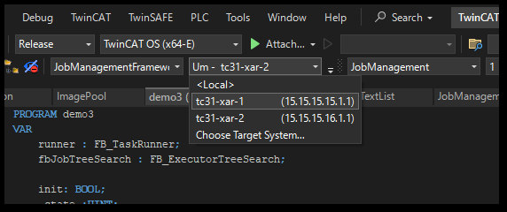
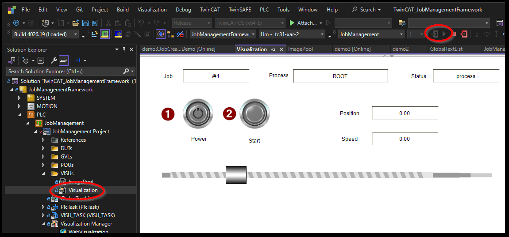

Docker compose による TwinCAT のデプロイ#
/opt/stacs/TC_XAR_Container_Sample/以下にあるdocker-compose.yamlファイルを編集します。
これをベースに次の修正を行います。
docker-compose.yaml の編集#
TwinCATインスタンスを2つ定義する#
2つのインスタンスを作成するため、SERVICESセクション以下のtc31-xar-baseを、tc31-xar-1とし、 複製してtc31-xar-2を作成します。
container_name, hostnameを差別化し、ネットワークのIPアドレスとAMSNetIDをそれぞれ個別の値を割り当てます。
services:
mosquitto:
image: eclipse-mosquitto:latest
:
tc31-xar-1: # baseから1への名称変更
image: tc31-xar-base:latest
container_name: tc31-xar-1 # 名称変更
hostname: tc31-xar-1 # 名称変更
:
networks:
container-network:
ipv4_address: 192.168.20.3
:
environment:
#- PCI_DEVICES=NONE
- AMS_NETID=15.15.15.15.1.1
:
tc31-xar-2:
image: tc31-xar-base:latest
container_name: tc31-xar-2
hostname: tc31-xar-2
:
networks:
container-network:
ipv4_address: 192.168.20.4
:
environment:
#- PCI_DEVICES=NONE
- AMS_NETID=15.15.15.16.1.1
永続化ボリューム設定#
TwinCATにてActive Configurationを行うと、ランタイムイメージが/etc/TwinCAT/3.1上に作成されます。この場所をホストOS上のストレージに展開するため、それぞれのコンテナ用にxar1data,xar2dataという名前のボリュームを作成します。（リスト 1.19）
これを行わないとメモリ上にデータが作成されますので、再起動するとランタイムイメージは消滅してしまいます。
services:
:
tc31-xar-1:
:
volumes:
- xar1data:/etc/TwinCAT/3.1
tc31-xar-2:
:
volumes:
- xar2data:/etc/TwinCAT/3.1
volumes:
xar1data:
xar2data:
以上の変更を加えた全体のdocker-compose.yamlをリスト 1.20に掲載します。
networks:
container-network:
name: container-network
ipam:
driver: default
config:
- subnet: 192.168.20.0/24
gateway: 192.168.20.1
services:
mosquitto:
image: eclipse-mosquitto:latest
container_name: mosquitto
hostname: mosquitto
ports:
- "1883:1883"
restart: unless-stopped
volumes:
- ./simple-mosquitto.conf:/mosquitto/config/mosquitto.conf:ro
networks:
container-network:
ipv4_address: 192.168.20.2
tc31-xar-1:
image: tc31-xar-base:latest
container_name: tc31-xar-1 # 名称変更
hostname: tc31-xar-1 # 名称変更
restart: unless-stopped
depends_on:
- mosquitto
privileged: true
volumes:
- /dev/hugepages:/dev/hugepages:rw
- xar1data:/etc/TwinCAT/3.1 # 追加
networks:
container-network:
ipv4_address: 192.168.20.3
# Use PCI_DEVICES as environment variables to specify the Ethernet
# controllers which can be used by the TwinCAT runtime for real-time
# ethernet communication.
# If PCI_DEVICES is not provided at all, TwinCAT will probe all
# available Ethernet controllers of the host for real-time ethernet communication.
# If PCI_DEVICES is set to NONE, the TwinCAT runtime won't use probe
# any PCI Ethernet controller for real-time ethernet communicaion.
# Set PCI_DEVICES to a space seperated list of PCI slot address
# to explicitly set Ethernet controllers for real-time ethernet communication.
# Run `sudo TcRteInstall -l` on the host to get a list of available
# Ethernet controllers and their PCI slot address
# Examples:
# #- PCI_DEVICES=NONE
# - PCI_DEVICES=NONE
# - PCI_DEVICES=0000:02:00.0
# - PCI_DEVICES=0000:04:00.0 0000:03:00.0
environment:
#- PCI_DEVICES=NONE
- AMS_NETID=15.15.15.15.1.1
tc31-xar-2:
image: tc31-xar-base:latest
container_name: tc31-xar-2 # 名称変更
hostname: tc31-xar-2 # 名称変更
restart: unless-stopped
depends_on:
- mosquitto
privileged: true
volumes:
- /dev/hugepages:/dev/hugepages:rw
- xar2data:/etc/TwinCAT/3.1 # 追加
networks:
container-network:
ipv4_address: 192.168.20.4
# Use PCI_DEVICES as environment variables to specify the Ethernet
# controllers which can be used by the TwinCAT runtime for real-time
# ethernet communication.
# If PCI_DEVICES is not provided at all, TwinCAT will probe all
# available Ethernet controllers of the host for real-time ethernet communication.
# If PCI_DEVICES is set to NONE, the TwinCAT runtime won't use probe
# any PCI Ethernet controller for real-time ethernet communicaion.
# Set PCI_DEVICES to a space seperated list of PCI slot address
# to explicitly set Ethernet controllers for real-time ethernet communication.
# Run `sudo TcRteInstall -l` on the host to get a list of available
# Ethernet controllers and their PCI slot address
# Examples:
# #- PCI_DEVICES=NONE
# - PCI_DEVICES=NONE
# - PCI_DEVICES=0000:02:00.0
# - PCI_DEVICES=0000:04:00.0 0000:03:00.0
environment:
#- PCI_DEVICES=NONE
- AMS_NETID=15.15.15.16.1.1
volumes: # このブロック追加
xar1data:
xar2data:
リアルタイムネットワークドライバのコンテナへの割当#
ホスト側のTwinCATサービスを停止し、イーサネットカードを開放します。
$ sudo systemctl disable --now TcSystemServiceUm
リアルタイムイーサネットインターフェースカードへvfio-pciドライバの適用リアルタイムイーサネット通信には、PCIベースのネットワークデバイス向けにvfio-pciドライバが必要です。コマンドラインツールTcRteInstallを使用して、IPCのネットワークデバイスにvfio-pciドライバを割り当ててください。
まず、適用可能なネットワークPCIデバイスを
TcRteInstall -lコマンドで一覧します。$ sudo TcRteInstall -l +------+------------+----------------------+----------------+------------+------------+------------------------------------+------------+ | No | Name | MAC | Location | Driver | Override | Model | Link | +------+------------+----------------------+----------------+------------+------------+------------------------------------+------------+ | 0 | enp2s0 | 00:01:05:45:43:fb | 0000:02:00.0 | igb | [-] | I210 Gigabit Network Connection | up | | 1 | enp1s0 | 00:01:05:45:43:fa | 0000:01:00.0 | igb | [-] | I210 Gigabit Network Connection | up | +------+------------+----------------------+----------------+------------+------------+------------------------------------+------------+
このうち、
Location列に見られるPCIスロット番号を指定し、次のコマンドを発行してコンテナで使用可能な状態にします。たとえば、enp2s0のカードにvfio-pciドライバを適用する場合、Locationには、0000:02:00.0とあるため、$ sudo TcRteInstall -b 0000:02:00.0
とします。vfio-pciドライバを適用する場合は
-bを、解除するには、-uを指定します。再度確認します。$ sudo TcRteInstall -l +------+------------+----------------------+----------------+------------+------------+------------------------------------+------------+ | No | Name | MAC | Location | Driver | Override | Model | Link | +------+------------+----------------------+----------------+------------+------------+------------------------------------+------------+ | 0 | enp2s0 | unknown | 0000:02:00.0 | vfio-pci | [*] | I210 Gigabit Network Connection | up | | 1 | enp1s0 | 00:01:05:45:43:fa | 0000:01:00.0 | igb | [-] | I210 Gigabit Network Connection | up | +------+------------+----------------------+----------------+------------+------------+------------------------------------+------------+
このように、
enp2s0がigbではなく、vfio-pciに切り替わっていることがわかります。危険
XAEや通常のEthernetに用いるネットワークカードを指定しないでください。Linux OSのネットワークスタックにおける通信が一切できなくなります。
TwinCAT Container の起動とデーモン化#
これまでの設定によりTwinCAT Containerは以下のコマンドで始動させることができます。
$ cd /opt/stacs/TC_XAR_Container_Sample
$ sudo docker compose up -d
[+] Running 4/4
✔ Network container-network Created 0.2s
✔ Container mosquitto Started 1.4s
✔ Container tc31-xar-1 Started 2.0s
✔ Container tc31-xar-2 Started 2.1s
$
また、終了するときは次のコマンドを発行します。
$ sudo docker compose down
[+] Running 4/4
✔ Container tc31-xar-1 Removed 1.6s
✔ Container tc31-xar-2 Removed 1.4s
✔ Container mosquitto Removed 0.7s
✔ Network container-network Removed 0.4s
$
ボリュームも含めた完全消去
以下のコマンドを発行すると、Docker compose以下の全てのコンテナは即座に停止し、コンテナイメージおよび、TwinCATの永続化データなどのボリュームも含めて全てが削除できます。完全アンインストール時はこのコマンドを実行してください。くれぐれも取扱いにご注意ください。
$ sudo docker compose down --rmi all --volumes --remove-orphans
コンピュータ起動時毎回この操作を行わなければコンテナ起動しません。このため、Linuxのサービス管理機構であるsystemdを用いてサービス化を行います。
まず/etc/systemd/system/以下にtwincat_compose.serviceファイルを新規作成します。（リスト 1.21）
[Unit]
Description=TwinCAT docker-compose service
After=docker.service
[Service]
Type=oneshot
RemainAfterExit=yes
WorkingDirectory=/opt/stacks/TC_XAR_Container_Sample
ExecStart=/usr/bin/docker compose up -d
ExecStop=/usr/bin/docker compose down
TimeoutStartSec=0
[Install]
WantedBy=multi-user.target
その後、次のコマンドで設定を反映します。
$ sudo systemctl daemon-reload
その後、次のコマンドでサービスを起動します。また、enableコマンドを発行しているため、次回再起動時も自動的にTwinCATコンテナが自動的に起動します。
$ sudo systemctl enable --now twincat_compose
TwinCATコンテナを無効化したい場合は、
$ sudo systemctl disable --now twincat_compose
とします。同時に、ホスト側のTwinCATを有効にする場合は、
$ sudo systemctl enable --now TcSystemServiceUm
とします。
接続と試運転#
TwinCAT XAEにてTwinCATプロジェクトを準備します。
XAE側の設定の節にて、事前にADS-over-MQTTで接続する設定を行っていると思います。設定内容を反映するにはSystemManagerServiceの再起動が必要です。PCの再起動により行ってください。
プロジェクトを開き、接続先のタブを確認します。
docker-compose.yamlで設定したhostaname:で定義した名称およびAmsNetIdが一覧されています。接続するターゲットを選び、Active ConfigurationおよびRUNモードへの移行をおこなってください。
RUNモード、および、PLCスタートを行ってください。
PLC > JobManagement > JobManagement Project > VISUs > Visualization をダブルクリックしてHMIのシミュレーション画面を表示させます。
Powerボタンの続き、Startボタンを押すと、シーケンスが動作します。